CRP2A Calibration Curve #1
Canberra Inspector 1000 - LaBr
CRP2A Luminescence Team
2019-05-28
Source:vignettes/crp2a_1.Rmd
crp2a_1.RmdImport files
# Import CNF files for calibration
# Skip the 30 first chanels
calib_dir <- system.file("extdata/crp2a/calibration", package = "gamma")
(calib_spc <- read(calib_dir, skip = TRUE))
#> A collection of 7 gamma spectra: BRIQUE, C341, C347, GOU, LMP, MAZ, PEP
# Import CNF files for background noise measurement
# Skip the 30 first chanels
noise_dir <- system.file("extdata/crp2a/background", package = "gamma")
(noise_spc <- read(noise_dir, skip = TRUE))
#> Gamma spectrum:
#> Reference: BDF
#> Instrument: InSpector 1000
#> Date: 2009-07-24 10:22:46
#> Number of chanels: 1010
#> Energy range (keV): 42 - 3323.47
#> Dose rate: not knownInspect spectra
# Plot calibration spectra
plot(calib_spc, xaxis = "energy", yaxis = "rate") +
ggplot2::labs(title = "Calibration spectra") +
ggplot2::theme_bw()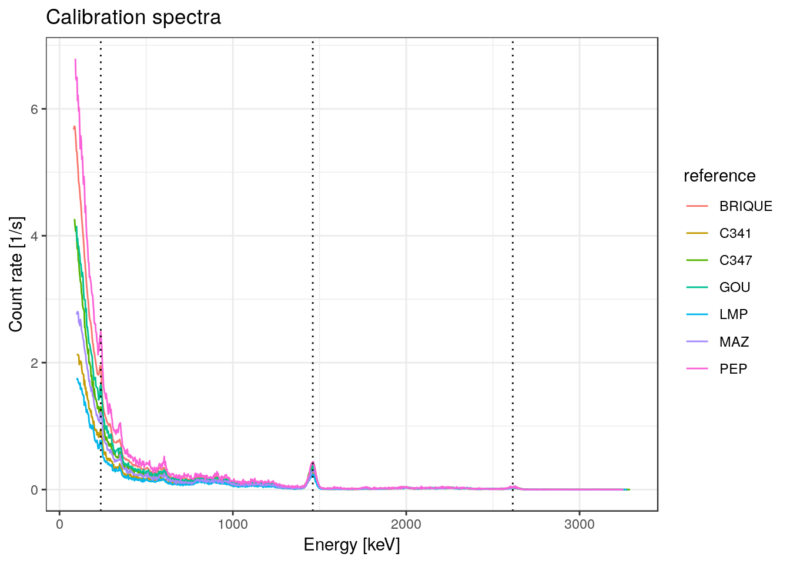
# Plot background noise spectrum
plot(noise_spc) +
ggplot2::labs(title = "Background noise spectrum") +
ggplot2::theme_bw()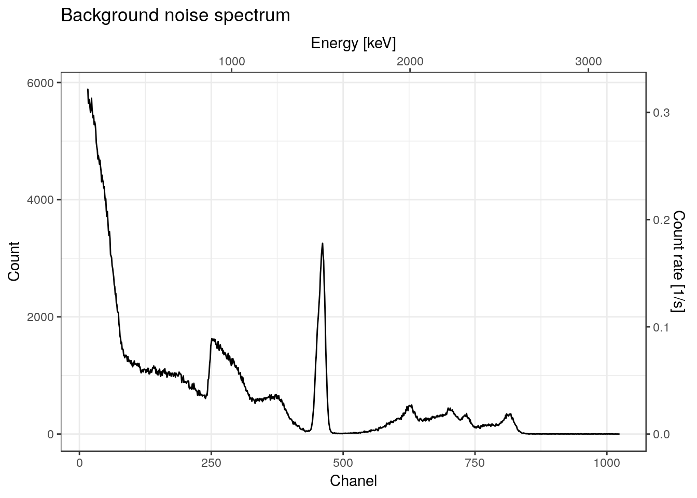
Energy scale calibration
Reference spectra
# Peak parameters estimation
# Fit peaks at chanel 75, 463 and 825 (starting positions)
calib_peaks <- list(
## BRIQUE
BRIQUE = fitPeaks(calib_spc[["BRIQUE"]], peaks = c(75, 463, 825)),
## C341
C341 = fitPeaks(calib_spc[["C341"]], peaks = c(75, 463, 825)),
## C347
C347 = fitPeaks(calib_spc[["C347"]], peaks = c(75, 463, 825), bounds = c(0.5)),
## GOU
GOU = fitPeaks(calib_spc[["GOU"]], peaks = c(75, 463, 825)),
## LMP
LMP = fitPeaks(calib_spc[["LMP"]], peaks = c(75, 463, 825), bounds = c(0.5)),
## MAZ
MAZ = fitPeaks(calib_spc[["MAZ"]], peaks = c(75, 463, 825)),
## PEP
PEP = fitPeaks(calib_spc[["PEP"]], peaks = c(75, 463, 825))
)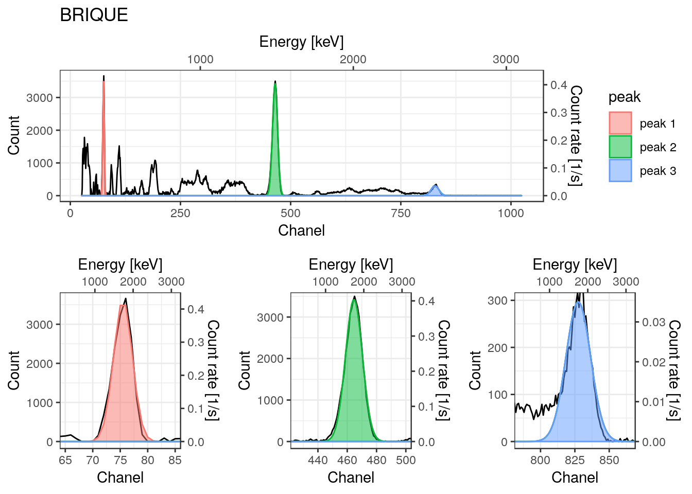
| Mean (chanel) | Std. dev. (chanel) | Height (count) | |
|---|---|---|---|
| peak #1 | 75.500 | 1.707 | 3634.167 |
| peak #2 | 464.588 | 5.792 | 3423.187 |
| peak #3 | 827.486 | 9.016 | 296.867 |
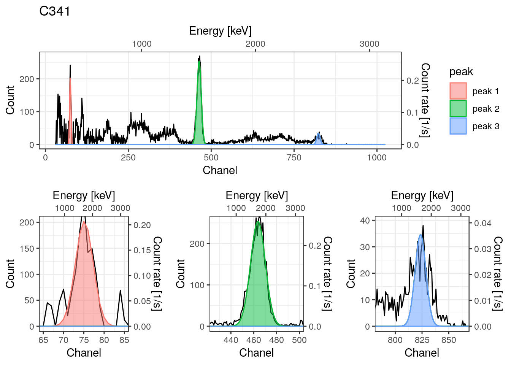
| Mean (chanel) | Std. dev. (chanel) | Height (count) | |
|---|---|---|---|
| peak #1 | 75.109 | 2.196 | 202.003 |
| peak #2 | 463.657 | 6.494 | 253.937 |
| peak #3 | 821.555 | 13.100 | 24.604 |
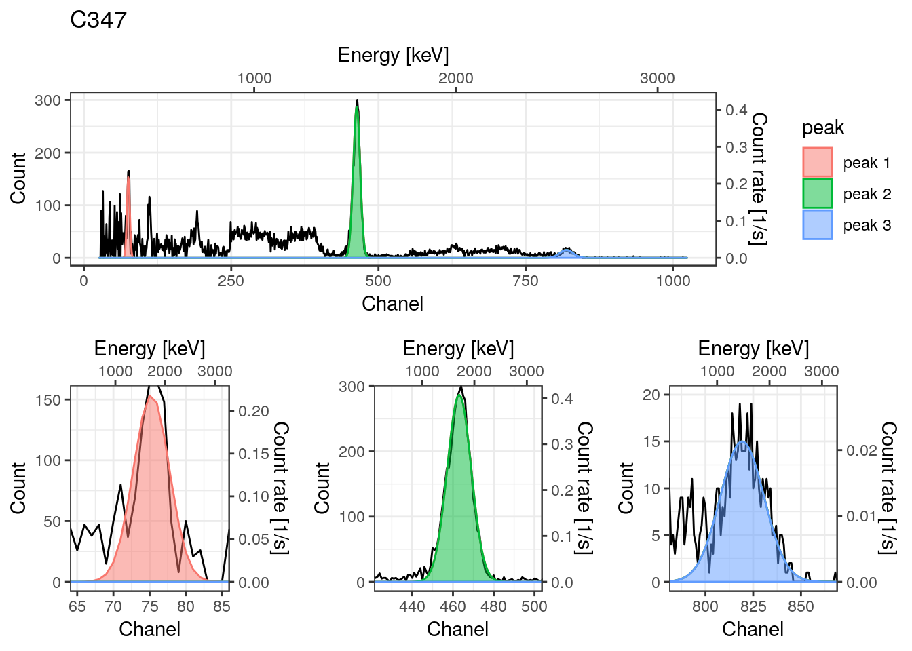
| Mean (chanel) | Std. dev. (chanel) | Height (count) | |
|---|---|---|---|
| peak #1 | 75.247 | 2.473 | 154.044 |
| peak #2 | 463.075 | 5.885 | 286.846 |
| peak #3 | 819.206 | 11.466 | 15.000 |
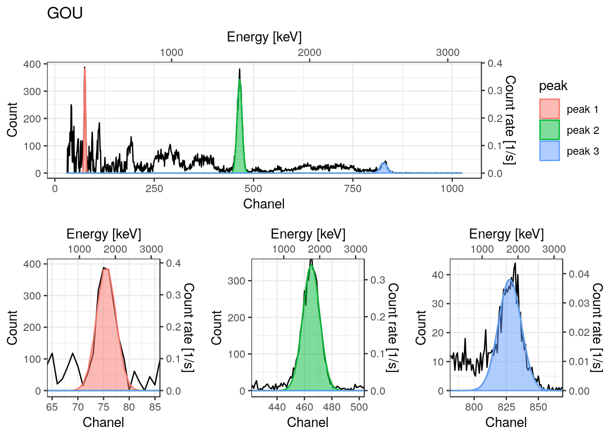
| Mean (chanel) | Std. dev. (chanel) | Height (count) | |
|---|---|---|---|
| peak #1 | 75.520 | 1.864 | 396.907 |
| peak #2 | 464.967 | 6.222 | 343.038 |
| peak #3 | 827.256 | 10.484 | 35.491 |
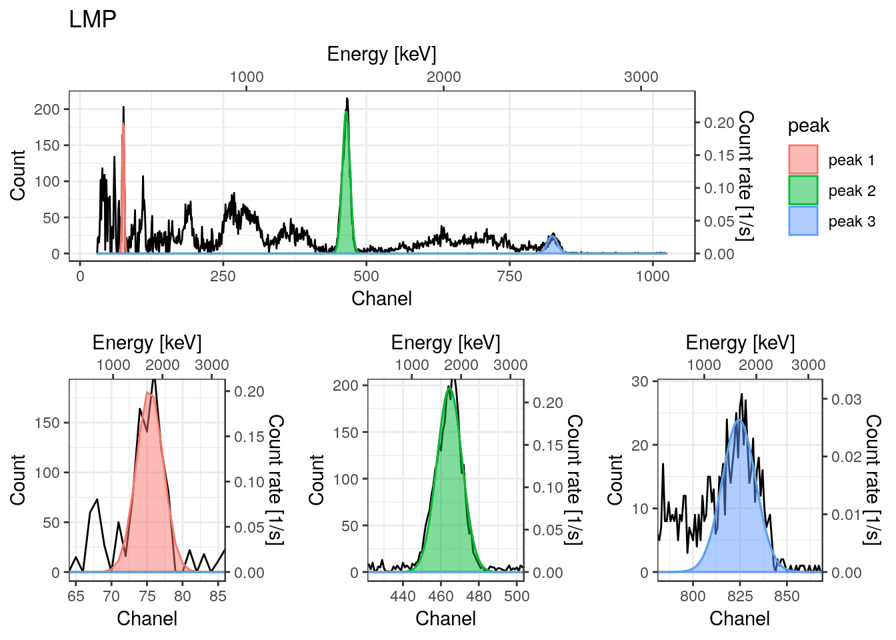
| Mean (chanel) | Std. dev. (chanel) | Height (count) | |
|---|---|---|---|
| peak #1 | 75.401 | 1.865 | 184.823 |
| peak #2 | 464.536 | 6.656 | 197.173 |
| peak #3 | 824.424 | 8.918 | 23.939 |
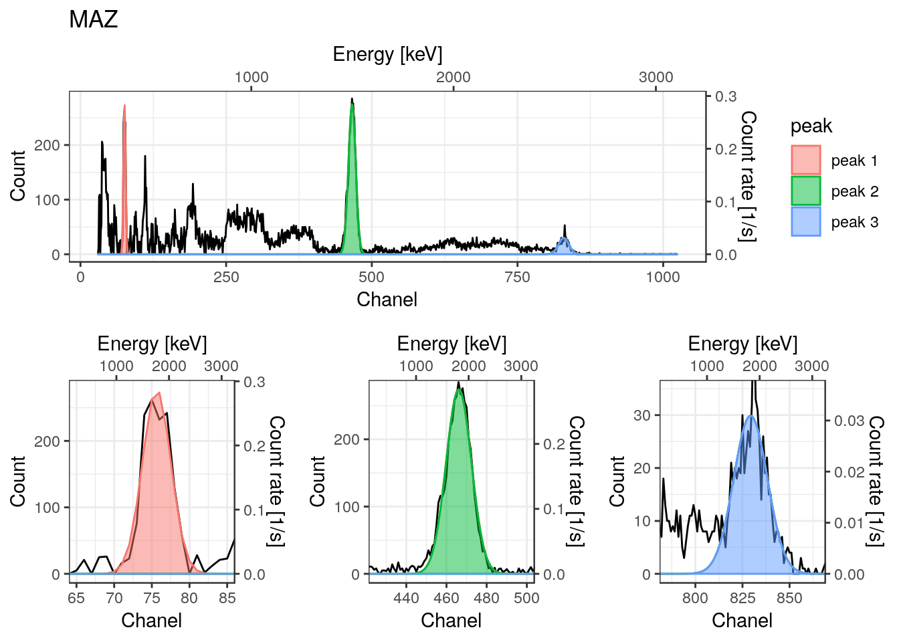
| Mean (chanel) | Std. dev. (chanel) | Height (count) | |
|---|---|---|---|
| peak #1 | 75.638 | 1.891 | 277.823 |
| peak #2 | 466.113 | 6.306 | 274.540 |
| peak #3 | 828.905 | 10.251 | 27.951 |

| Mean (chanel) | Std. dev. (chanel) | Height (count) | |
|---|---|---|---|
| peak #1 | 75.326 | 1.984 | 301.098 |
| peak #2 | 463.352 | 6.000 | 205.807 |
| peak #3 | 824.747 | 10.905 | 19.683 |
# Expected energies (keV)
expected_peaks <- c(Pb212 = 238, K40 = 1461, Tl208 = 2615)
# Energy scale calibration
calib_scaled <- lapply(X = calib_peaks, FUN = calibrate, lines = expected_peaks)
calib_scaled <- methods::as(calib_scaled, "GammaSpectra")
plot(calib_scaled, xaxis = "energy", yaxis = "rate") +
ggplot2::geom_vline(xintercept = expected_peaks, linetype = 3) +
ggplot2::theme_bw()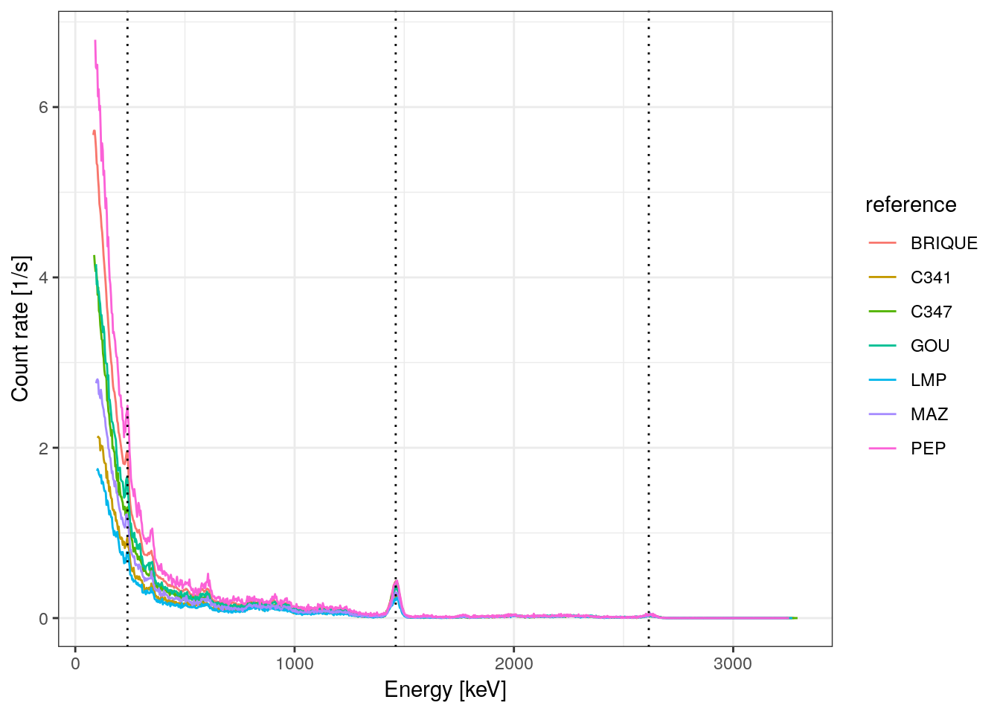
Background noise spectrum
noise_lines <- list(
La138 = c(chanel = 251, energy = 789),
K40 = c(chanel = 460, energy = 1461),
Tl208 = c(chanel = 813, energy = 2615)
)
noise_scaled <- calibrate(noise_spc, lines = noise_lines)
plot(noise_spc, noise_scaled, xaxis = "energy", yaxis = "rate") +
ggplot2::geom_vline(xintercept = c(789, 1461, 2614.5), linetype = 3) +
ggplot2::theme_bw()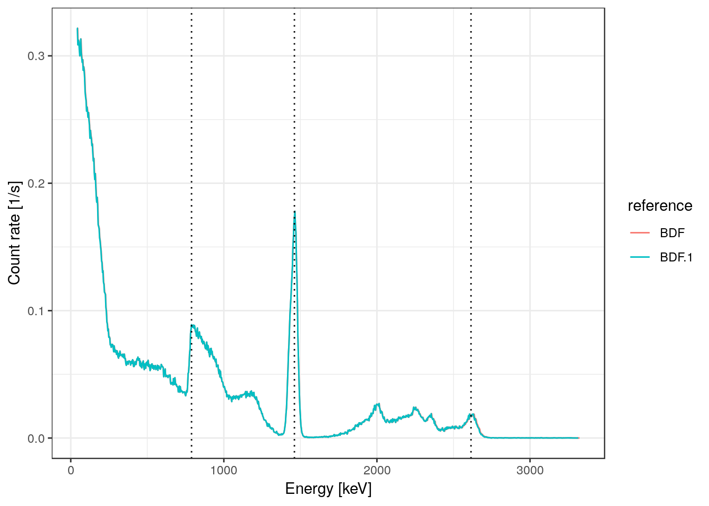
Signal integration
Integrate
# Integrate background noise
# Compare with previous value of 25279.63 +/- 1.66
noise <- integrateSignal(
noise_scaled,
range = integration_range,
NiEi = TRUE
)
knitr::kable(
rbind(noise),
digits = 3,
caption = "Background spectrum integration"
)| value | error | |
|---|---|---|
| noise | 25298.19 | 1.663 |
# Integrate reference spectra
signal <- integrateSignal(
calib_scaled,
range = integration_range,
noise = noise,
NiEi = TRUE,
simplify = TRUE
)
knitr::kable(
signal,
digits = 3,
caption = "Reference spectra integration"
)| value | error | |
|---|---|---|
| BRIQUE | 64029.50 | 4.884 |
| C341 | 27714.62 | 10.554 |
| C347 | 46241.35 | 14.354 |
| GOU | 51855.80 | 12.480 |
| LMP | 21080.27 | 10.242 |
| MAZ | 37092.40 | 11.487 |
| PEP | 80262.85 | 20.472 |
Build Calibration curve
Set dose rates
setDoseRate(calib_scaled) <- list(
BRIQUE = c(1986, 36),
C341 = c(850, 21),
C347 = c(1424, 24),
GOU = c(1575, 17),
LMP = c(642, 18),
MAZ = c(1141, 12),
PEP = c(2538, 112)
)
getDoseRate(calib_scaled)
#> value error
#> BRIQUE 1986 36
#> C341 850 21
#> C347 1424 24
#> GOU 1575 17
#> LMP 642 18
#> MAZ 1141 12
#> PEP 2538 112Linear regression
# Build calibration curve
(BDX1 <- fit(
calib_scaled,
noise_scaled,
range = integration_range,
intercept = TRUE,
details = list(
laboratory = "IRAMAT-CRP2A (UMR 5060)",
instrument = "InSpector 1000",
detector = "LaBr",
authors = "CRP2A Luminescence Team"
)
))
#> Calibration curve:
#> Details:
#> - Laboratory: IRAMAT-CRP2A (UMR 5060)
#> - Instrument: InSpector 1000
#> - Detector: LaBr
#> - Authors: CRP2A Luminescence Team
#> - Date: 2019-05-28 17:10:25
#> Model summary:
#> - Slope: 0.032 +/- 0
#> - Intercept: -41.116 +/- 20.846
#> - Residual standard error: 20.83
#> - Multiple R-squared: 0.99916
#> - Adjusted R-squared: 0.999
# Plot Calibration curve
plot(BDX1) +
ggplot2::theme_bw()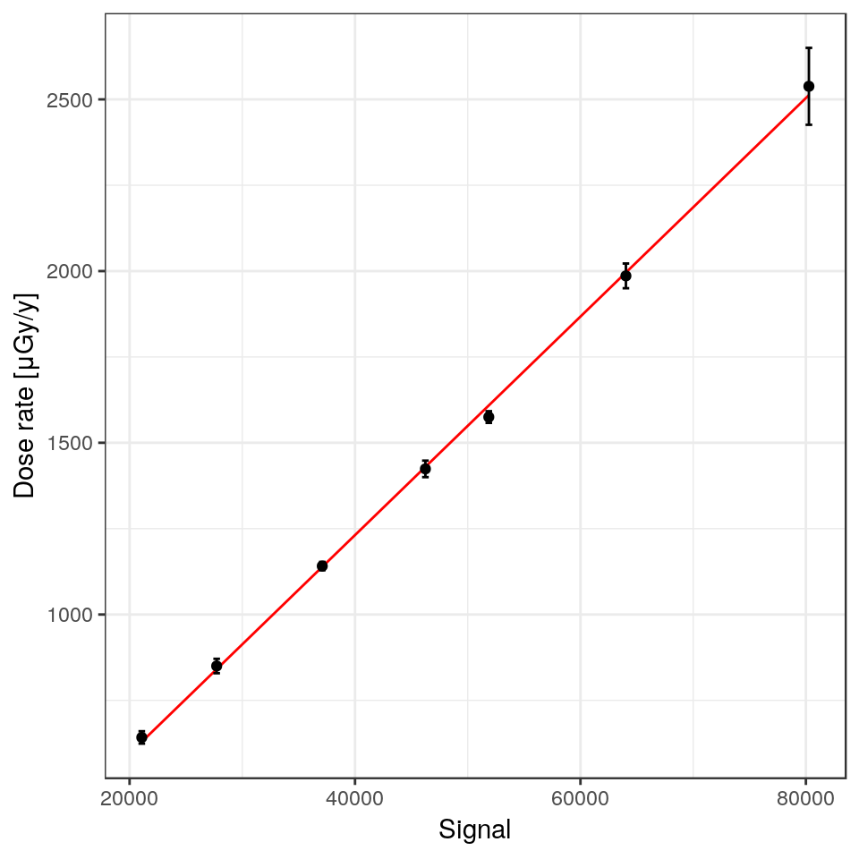
Check model
#>
#> Call:
#> stats::lm(formula = fit_formula, data = fit_data, weights = fit_weights)
#>
#> Residuals:
#> 1 2 3 4 5 6 7
#> -9.921 9.402 -6.008 -33.627 12.468 2.057 25.630
#>
#> Coefficients:
#> Estimate Std. Error t value Pr(>|t|)
#> (Intercept) -4.112e+01 2.085e+01 -1.972 0.106
#> signal_value 3.181e-02 4.116e-04 77.299 6.87e-09 ***
#> ---
#> Signif. codes: 0 '***' 0.001 '**' 0.01 '*' 0.05 '.' 0.1 ' ' 1
#>
#> Residual standard error: 20.83 on 5 degrees of freedom
#> Multiple R-squared: 0.9992, Adjusted R-squared: 0.999
#> F-statistic: 5975 on 1 and 5 DF, p-value: 6.865e-09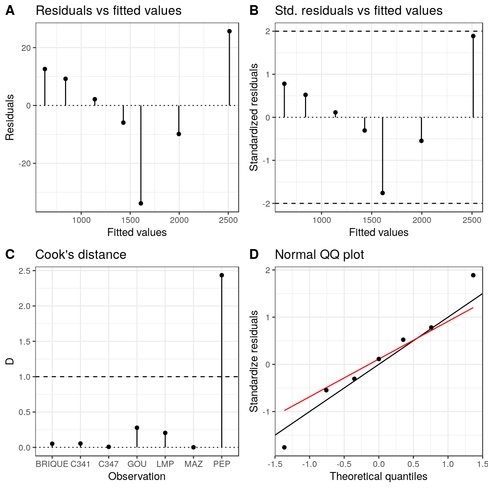
Compare with previous values
# Import CNF files for calibration
# Skip the 30 first chanels
test_dir <- system.file("extdata/crp2a/test", package = "gamma")
(test_spc <- read(test_dir, skip = TRUE))
#> A collection of 10 gamma spectra: BR2011-08, BR2011-15A, BR2011-15B, BR2011-16, BR2011-20, BR2011-23, BR2011-24, BR2011-26, BR2011-27, BR2011-29# Peak parameters estimation
# Fit peaks at chanel 75, 463, 825 (starting positions)
# (expected energy: 239, 1461, 2615 keV)
test_peaks <- lapply(
X = test_spc,
FUN = fitPeaks,
peaks = c(75, 463, 825),
bounds = c(0.5)
)
# Energy scale calibration
test_scaled <- lapply(X = test_peaks, FUN = calibrate, lines = expected_peaks)
test_scaled <- methods::as(test_scaled, "GammaSpectra")
plot(test_scaled, xaxis = "energy", yaxis = "rate") +
ggplot2::geom_vline(xintercept = expected_peaks, linetype = 3) +
ggplot2::theme_bw()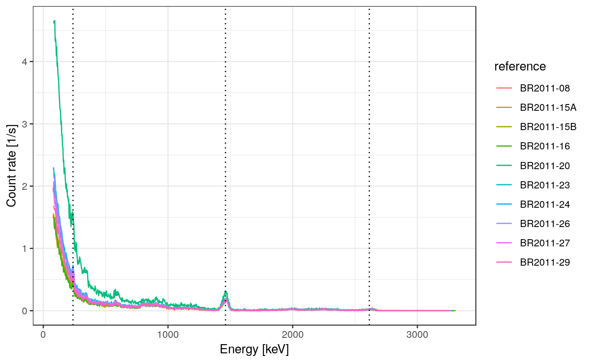
| Dose | Dose error | |
|---|---|---|
| BR2011-08 | 398.450 | 13.022 |
| BR2011-15A | 271.770 | 8.886 |
| BR2011-15B | 267.445 | 8.742 |
| BR2011-16 | 211.937 | 6.929 |
| BR2011-20 | 1504.229 | 49.147 |
| BR2011-23 | 474.785 | 15.514 |
| BR2011-24 | 435.260 | 14.224 |
| BR2011-26 | 423.780 | 13.848 |
| BR2011-27 | 344.268 | 11.252 |
| BR2011-29 | 310.068 | 10.132 |
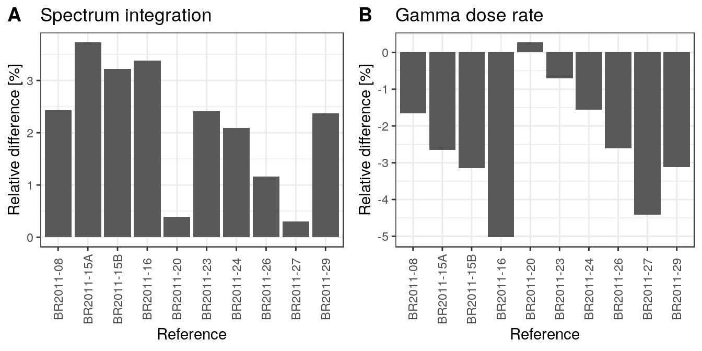
R session
#> R version 3.6.0 (2019-04-26)
#> Platform: x86_64-pc-linux-gnu (64-bit)
#> Running under: Ubuntu 18.04.2 LTS
#>
#> Matrix products: default
#> BLAS: /usr/lib/x86_64-linux-gnu/blas/libblas.so.3.7.1
#> LAPACK: /usr/lib/x86_64-linux-gnu/lapack/liblapack.so.3.7.1
#>
#> locale:
#> [1] LC_CTYPE=fr_FR.UTF-8 LC_NUMERIC=C
#> [3] LC_TIME=fr_FR.UTF-8 LC_COLLATE=fr_FR.UTF-8
#> [5] LC_MONETARY=fr_FR.UTF-8 LC_MESSAGES=fr_FR.UTF-8
#> [7] LC_PAPER=fr_FR.UTF-8 LC_NAME=C
#> [9] LC_ADDRESS=C LC_TELEPHONE=C
#> [11] LC_MEASUREMENT=fr_FR.UTF-8 LC_IDENTIFICATION=C
#>
#> attached base packages:
#> [1] stats graphics grDevices utils datasets methods base
#>
#> other attached packages:
#> [1] magrittr_1.5 gamma_0.1.0.9003
#>
#> loaded via a namespace (and not attached):
#> [1] Rcpp_1.0.1 highr_0.8 compiler_3.6.0 pillar_1.4.0
#> [5] plyr_1.8.4 tools_3.6.0 digest_0.6.18 evaluate_0.13
#> [9] memoise_1.1.0 tibble_2.1.1 gtable_0.3.0 pkgconfig_2.0.2
#> [13] rlang_0.3.4 rstudioapi_0.10 commonmark_1.7 yaml_2.2.0
#> [17] pkgdown_1.3.0 xfun_0.7 rxylib_0.2.3 stringr_1.4.0
#> [21] dplyr_0.8.1 roxygen2_6.1.1 xml2_1.2.0 knitr_1.22
#> [25] desc_1.2.0 fs_1.3.1 cowplot_0.9.4 rprojroot_1.3-2
#> [29] grid_3.6.0 tidyselect_0.2.5 glue_1.3.1 R6_2.4.0
#> [33] rmarkdown_1.12 tidyr_0.8.3 ggplot2_3.1.1 purrr_0.3.2
#> [37] backports_1.1.4 scales_1.0.0 htmltools_0.3.6 MASS_7.3-51.1
#> [41] assertthat_0.2.1 colorspace_1.4-1 labeling_0.3 stringi_1.4.3
#> [45] lazyeval_0.2.2 munsell_0.5.0 crayon_1.3.4